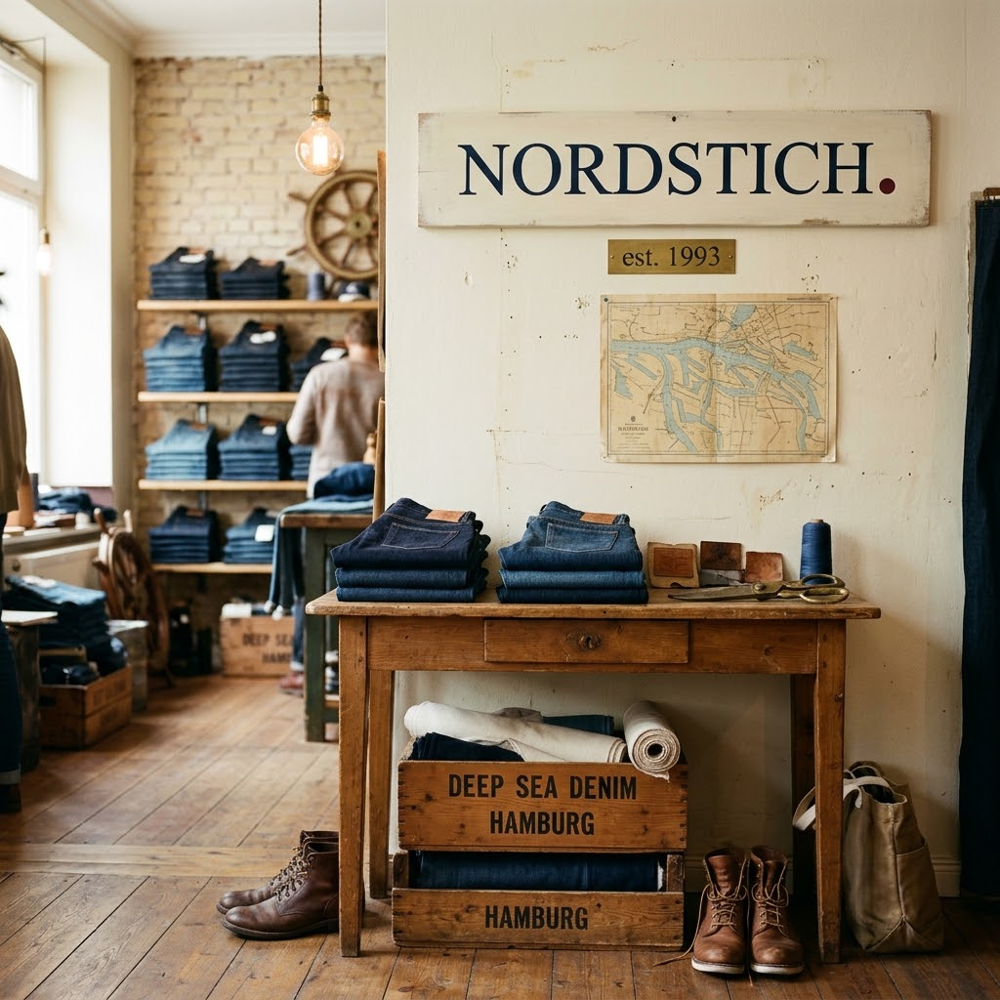

Persönlich
Wir nehmen uns Zeit, hören zu und helfen Ihnen, die Passform zu finden, die zu Ihnen passt.
NORDSTICH HAMBURG · SEIT ÜBER 30 JAHREN
Eine Jeans muss nicht nur gut aussehen, sondern sich auch richtig anfühlen. Sie soll zu Ihrem Alltag passen und Ihnen Bewegungsfreiheit geben. Bei Nordstich unterstützen wir Sie dabei, einen Schnitt zu entdecken, mit dem Sie sich gerne auf den Weg machen.

WAS UNS AUSMACHT
Bei Nordstich dreht sich alles um Denim, individuelle Passformen und die Freude daran, genau die richtige Jeans zu finden.
Wir wissen, dass jede Jeans anders sitzt und jeder Mensch andere Vorstellungen hat. Deshalb ist uns wichtig, nicht einfach irgendeine Hose zu empfehlen, sondern gemeinsam mit Ihnen das passende Modell zu entdecken.
Persönliche Beratung, eine sorgfältige Auswahl und die Liebe zum Detail machen für uns den Unterschied.
Unsere Beratung entdecken ↗UNSERE PHILOSOPHIE
Wir nehmen uns Zeit, hören zu und helfen Ihnen, die Passform zu finden, die zu Ihnen passt.
Gute Jeans müssen keinen kurzlebigen Trends folgen. Qualität und ein authentischer Stil bleiben.
Denim ist unsere Welt. Diese Begeisterung möchten wir bei jedem Besuch weitergeben.
WIR FREUEN UNS AUF SIE
Lernen Sie Nordstich persönlich kennen und besuchen Sie uns in Hamburg.
So finden Sie uns ↗